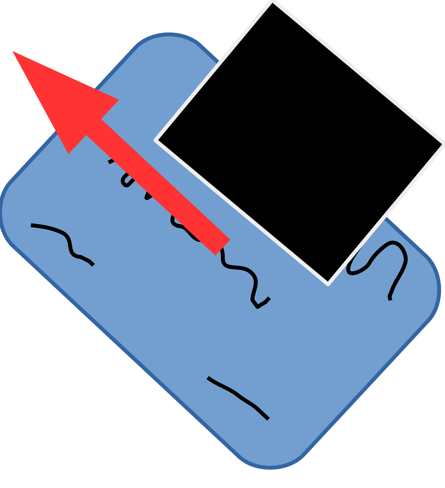

ParaCrypt is software for encrypting and decrypting data. For convenience the one-time-encryption-pads are created using preshared unencrypted files as sources of entropy.
This software originally started as a project to better understand the weaknesses in the cryptography that privacy on the internet depends upon. Reading a little literature, poking through the cryptography standards documents and some cryptographic code convinced me that most of the standard methods are reasonably secure at the moment. However, they are all vulnerable to increases in computing power and smart cryptanalysts. The only provably uncrackable encryption is a one-time-pad (see Wikipedia). One-time-pads are inconvenient to use because they require presharing a well randomized agreed upon key that is longer than what is to be encrypted.
Paranoid Encryption is my attempt to make this as convenient as possible. You still must preshare key files with your correspondent, but the files themselves do not have to be completely random. Your key files can be photos, large documents with a mixture of text and images or any other computer file you have handy (see more on picking key files in the usage section, because it is possible to choose bad key files). To make this work you must also share with your correspondent a password (even better, time varying passwords). The key file and the password are combined to make a one-time-pad with good randomness. As long as the password + key file combination is not reused or compromised the encrypted data should be undecipherable.
If you find this software useful or interesting please consider supporting further development  by tipping the coder(s). Also please let me know how you use ParaCrypt and what you think about it by briefly contributing to the general discussion list, reporting bugs and contributing feature requests.